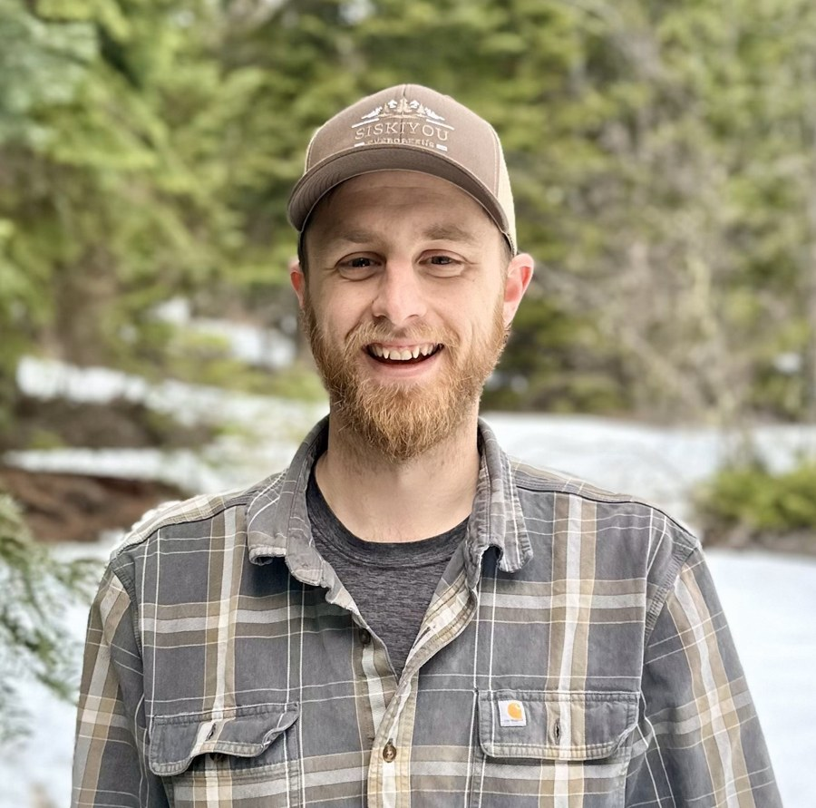

About

I am a forest biometrician and builder of the quantitative systems that timberland investment and forest management decisions run on. Forest inventory is a measurement problem, a statistical problem, and a software problem at once, and I have worked it from all three sides.
I hold a BS and MS in forestry from Michigan State University, where my research centered on small area estimation and Bayesian methods for large forest inventories. I am the original author of rFIA, an open-source R package built to simplify access to the US Forest Inventory and Analysis database, and the lead author of peer-reviewed research on forest change in the western United States, published in Nature Communications. While working towards a PhD at the University of Washington, I consulted in forest biometrics and data science for clients spanning the forest products industry to the natural climate solutions space. That experience, seeing the decisions that stemmed from my counsel and how that impacted the physical landscape, is what inspired me to step away from academia and pursue a career in the private sector.
I spent nearly five years at Campbell Global leading forest biometrics and inventory, directly supporting large-scale acquisitions, timberland valuations, and operations across the globe. I have held every seat at the table where a model meets a consequential decision: building the estimators, publishing the methods, and relying on them under fiduciary pressure. I explain results, assumptions, and uncertainty in plain terms, whether the reader is an executive, a practitioner, or an analyst. I have no product to sell, no acreage to defend, and no stake in the answer.
Siskiyou Biometrics is my independent practice, based in Ashland, Oregon.